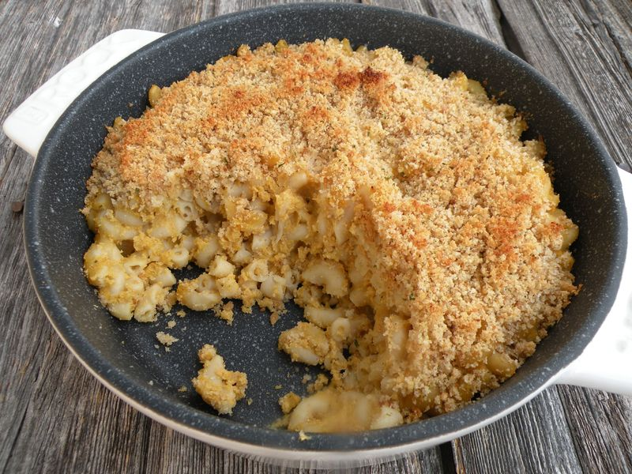

Macaroni au fromage à la courge butternut
Préparation: 15 minutes
Cuisson: 35 minutes
Total: 50 minutes
Ingrédients
-
750 g de courge butternut

-
1 c. à table de huile d'olive
-
2 gousses d'ail
-
1/2 c. à thé de paprika fumé
-
1 t de noix de cajou
-
1 c. à thé d'ail en poudre
-
1 c. à thé d'oignon en poudre
-
1 c. à table de moutarde de dijon
-
1 c. à table de jus de citron
-
2 t de bouillon de légumes
-
450 g de macaroni